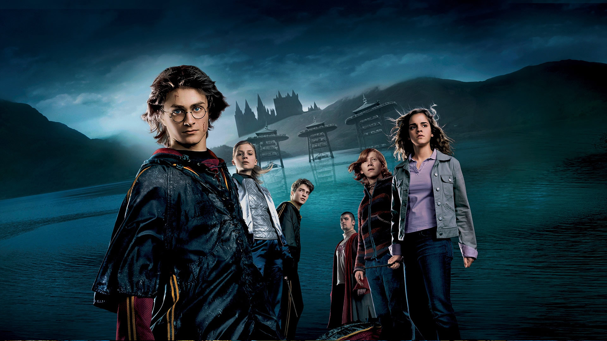
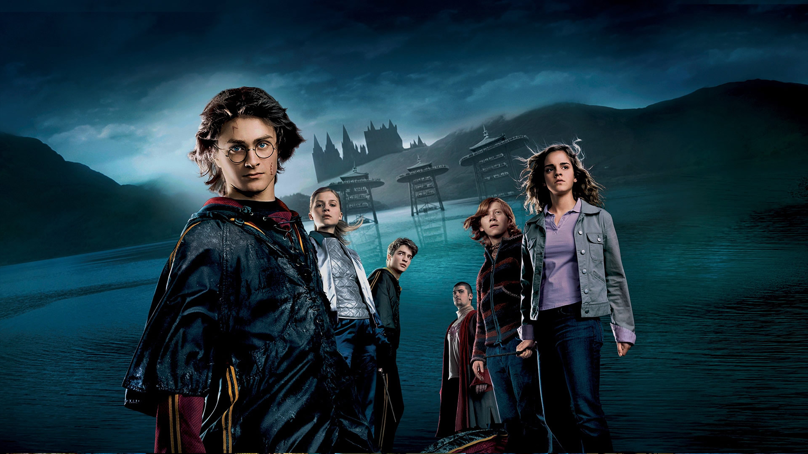

Harry Potter é uma série de filmes britânico - americana baseada na série de livros homônima da escritora J. K. Rowling. A série é distribuída pela Warner Bros. e consiste em oito filmes, iniciando com Harry Potter e a Pedra Filosofal (2001) e finalizando com Harry Potter e as Relíquias da Morte - Parte 2 (2011).